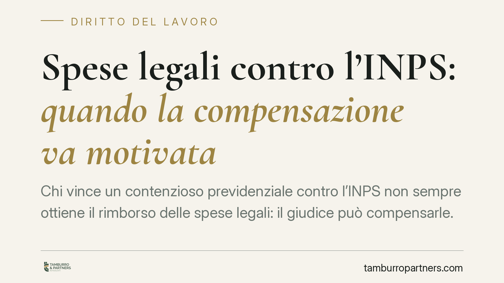

Spese legali contro l'INPS: quando la compensazione va motivata
Chi vince un contenzioso previdenziale contro l'INPS non sempre ottiene il rimborso delle spese legali: il giudice può compensarle. Ma la Cassazione ricorda che tale scelta va giustificata con ragioni concrete. Una motivazione generica come «complessità della materia» è apparente e rende la decisione nulla. Un principio che incide direttamente sul costo reale della lite per il cittadino.

Il caso: contributi alla gestione separata e spese compensate
Un professionista aveva contestato all'INPS la pretesa contributiva relativa alla gestione separata, legata anche alla mancata compilazione del quadro RR della dichiarazione dei redditi. Pur avendo ottenuto ragione nel merito, si era visto compensare le spese di lite, ossia costretto a sopportare i propri costi legali nonostante l'esito favorevole.
Il punto controverso non è stato il diritto in sé, ma la decisione sulle spese: il giudice aveva giustificato la compensazione richiamando genericamente la «complessità della materia». Un'espressione che, secondo la giurisprudenza di legittimità, non basta a sorreggere la scelta.
Inquadramento normativo
La regola base è contenuta nell'art. 91 c.p.c.: chi perde paga. È il principio della soccombenza. La deroga è prevista dall'art. 92, comma 2, c.p.c., che consente la compensazione — totale o parziale — delle spese in presenza di «gravi ed eccezionali ragioni».
Attenzione a non leggere questa deroga come un elenco chiuso. Dopo la sentenza della Corte costituzionale n. 77/2018, l'art. 92 c.p.c. ammette la compensazione non solo nei casi tipici (assoluta novità della questione, mutamento della giurisprudenza), ma anche per «altre analoghe gravi ed eccezionali ragioni». La compensazione resta quindi possibile, ma a una condizione precisa: deve essere motivata in modo effettivo.
Qui entra in gioco l'art. 132, n. 4, c.p.c., che impone al giudice di esporre le ragioni della decisione. Quando la motivazione esiste solo in apparenza — perché usa formule vuote, generiche o di stile, come «complessità della materia» — si parla di motivazione apparente. In sostanza: il giudice scrive qualcosa, ma non spiega nulla di verificabile. Secondo consolidata giurisprudenza della Cassazione, la motivazione apparente equivale alla sua mancanza e comporta la nullità della pronuncia.
Perché conta per chi fa causa all'INPS
Il contenzioso previdenziale sui contributi è frequente e spesso di importo rilevante. Per il contribuente, vincere nel merito ma non recuperare le spese legali può trasformare una vittoria in un risultato economicamente neutro, se non in perdita.
Il principio ribadito dalla giurisprudenza offre una tutela concreta: la compensazione non è discrezionale in senso assoluto. Il giudice deve indicare quali ragioni gravi ed eccezionali giustificano la scelta, in modo che siano controllabili in sede di impugnazione. Richiamare la «complessità della materia» senza spiegare in cosa consista non è sufficiente.
Resta però un punto da chiarire sul merito del contenzioso contributivo: la prescrizione dei contributi alla gestione separata è disciplinata dall'art. 3, commi 9 e 10, della L. 335/1995, che fissa il termine quinquennale, mentre la decorrenza segue l'art. 2935 c.c. (il termine inizia quando il diritto può essere fatto valere). È su questo impianto che va impostata l'eventuale eccezione di prescrizione, verificando anno per anno quali annualità contributive risultino ancora esigibili.
Cosa fare in concreto
- Verificate sempre la statuizione sulle spese, non solo l'esito del merito: una vittoria con spese compensate ha un impatto economico diverso da una vittoria con condanna dell'INPS.
- Controllate la motivazione della compensazione: se il giudice si limita a formule generiche come «complessità della materia» senza spiegarne le ragioni, valutate l'impugnazione per motivazione apparente ex art. 132 c.p.c.
- Nel merito contributivo, eccepite tempestivamente la prescrizione delle annualità più risalenti, richiamando l'art. 3, commi 9-10, L. 335/1995 e verificando la corretta decorrenza dei termini.
- Documentate la condotta processuale dell'INPS: una resistenza infondata o tardiva rafforza la richiesta di condanna alle spese a carico dell'ente.
- Valutate costi e tempi prima di avviare il contenzioso: il rimborso delle spese in caso di vittoria non è automatico e dipende dalla decisione del giudice.
Vale una precisazione doverosa: ottenere ragione nel merito non garantisce in modo automatico il recupero integrale delle spese legali sostenute. L'esito dipende dalla valutazione del giudice e dalle circostanze del caso concreto.
Disclaimer
Contributo informativo a cura di Tamburro & Partners - Avv. Giuseppe Tamburro. Non costituisce parere legale.
Ogni storia di lavoro ha i suoi tempi.
Se gestisci HR e vuoi un confronto su contenzioso, ispezioni o licenziamenti, scrivi allo studio. Ti rispondiamo entro un giorno lavorativo.